Behavior Tree Quick Start Guide
This guide shows how to use Behaviour Trees to set up an AI character that will patrol or chase a player.
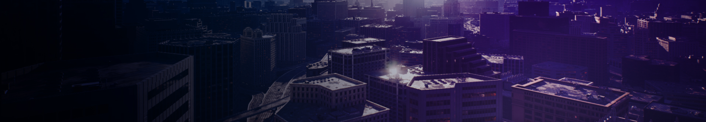
In the Behavior Tree Quick Start Guide, you will learn how to create an enemy AI that responds to seeing the Player and proceeds to chase them. When losing sight of the Player, after a few seconds (which can be adjusted based on your preference), the AI will give up chasing and randomly move around the environment until seeing the Player again as seen in the example video below.
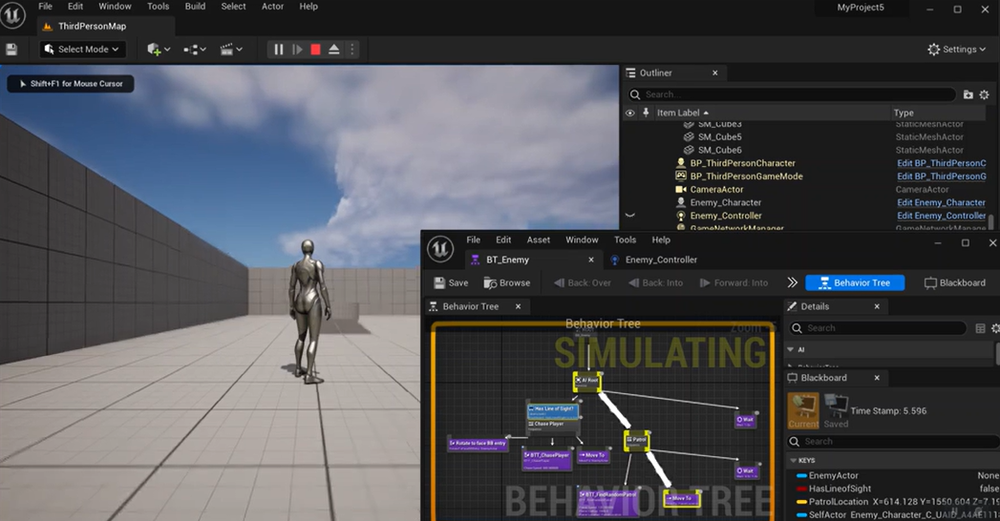
By the end of this guide, you will have an understanding of the following systems:
- Blueprint Visual Scripting
- Controllers
- Blackboards
- Behavior Trees
- Behavior Tree Services
- Behavior Tree Decorators
- Behavior Tree Tasks
1 - Required Project Setup
In this first step, we set up our project with the assets we'll need for our AI character to get around the environment.
**For this guide, we are using a new Blueprint Third Person Template project.
1. Open the Content Drawer, then right-click on the ThirdPerson folder and create a New Folder called AI.

2. In the ThirdPerson > Blueprints folder, drag the BP_ThirdPersonCharacter onto the AI folder and select Copy Here.

3. In the AI folder, create a new Blueprint Class based on the AIController class.
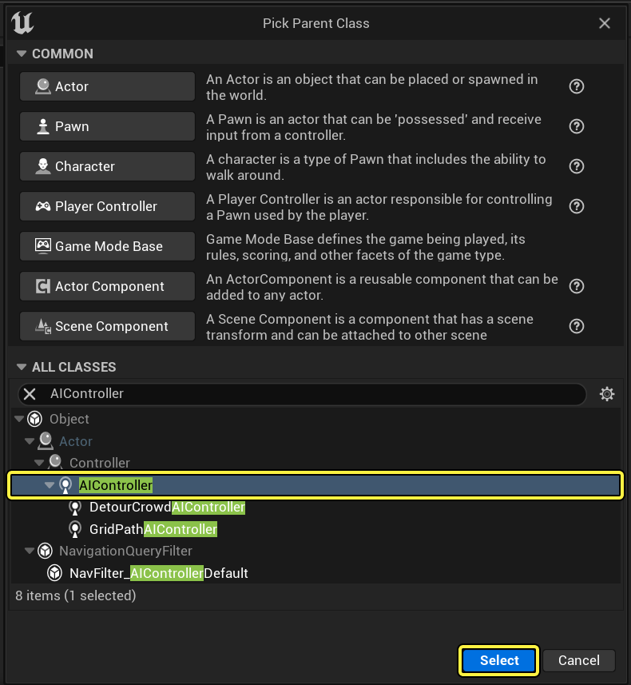
4. Name the AIController Blueprint Enemy_Controller and the BP_ThirdPersonCharacter Blueprint Enemy_Character.

5. Open Enemy_Character, then delete all the script from the graph.
6.Select the Character Movement component then set Max Walk Speed in the Details panel to 120.0.
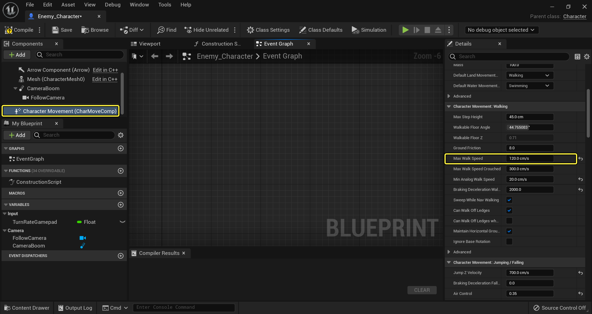
This reduces the speed of our AI Character's movement around the environment when patrolling and not chasing the Player.
7. Select Class Defaults from the Toolbar, then in the Details panel, assign the Enemy_Controller as the AI Controller Class.

We are going to place our AI in the world. If you spawn the AI after the world is loaded, change the Auto Possess AI setting to Spawned.
8. From the Content Drawer, drag the Enemy_Character into the Level.
9. From the Place Actors panel, drag a NavMeshBoundsVolume into the Level.

10. With the NavMeshBoundsVolume selected, press R and scale the volume to encapsulate the entire Level.

This will generate a Navigation Mesh that enables our AI character to move around the environment. You can press the P key to toggle the display of the NavMesh in the Viewport (green areas indicate possible navigation locations).
**>>8 During gameplay, you can use the Show Navigation console command to toggle the display of the NavMesh on/off.
Our project setup is complete, in the next step we will set up our Blackboard asset.
2 - Blackboard Setup
In this step, we create our Blackboard asset, which is essentially the brain of our AI. Anything we want our AI to know about will have a Blackboard Key that we can reference. We'll create keys for keeping track of the Player, whether or not the AI has a line of sight to the Player, and a location where the AI can move to when it is not chasing the Player.
1. In the Content Drawer, click +Add and under Artificial Intelligence, select Blackboard and call it BB_Enemy.

2. Inside the BB_Enemy Blackboard, click the New Key button and select Object.

The Blackboard asset consists of two panels: the Blackboard, which enables you to add and keep track of your Blackboard Keys (variables to monitor), and Blackboard Details, which enables you to name and specify the type of Keys.
3. For the Object key, enter EnemyActor as the Entry Name and Actor as the Base Class.

4. Add another Key with the Key Type set to Bool called HasLineOfSight.

This will be used to keep track of whether or not the AI has a line of sight to the Player.
5. Add another Key, with the Key Type set to Vector called PatrolLocation.

This will be used to keep track of a location in the Level where the AI can move when it is not chasing the Player.
Our Blackboard is set up with the things we need to track. In the next step, we will lay out our Behavior Tree.
3 - Behavior Tree Layout
In this step, we will lay out the flow of our Behavior Tree and the states that we want our AI to enter. Laying out your Behavior Tree with the states you anticipate your AI could be in as a visual flow will give you an idea of what type of logic and rules you will need to create to enter those states.
1. In the Content Drawer, click +Add and under Artificial Intelligence, select Behavior Tree and call it BT_Enemy.
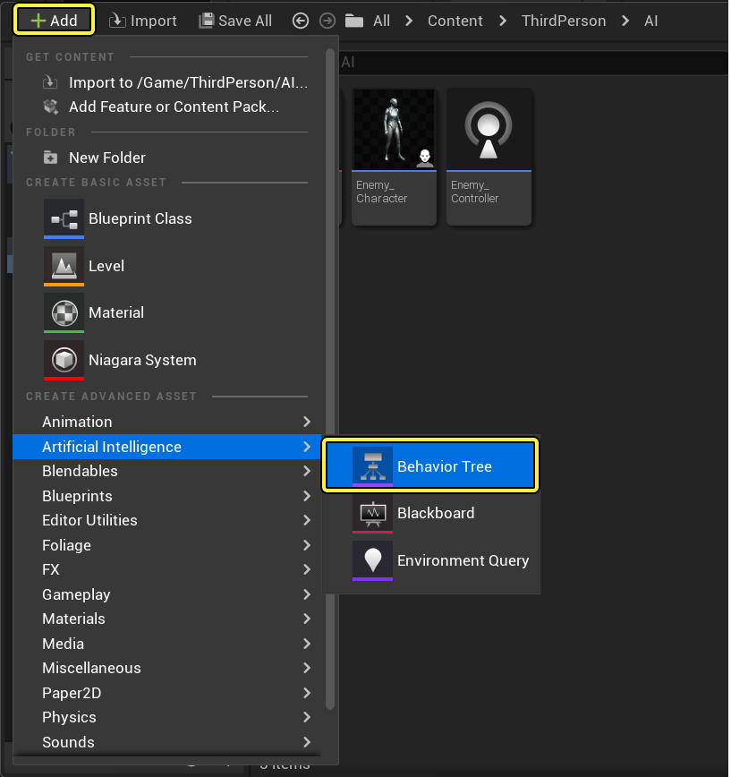
**Naming conventions may vary, but it's generally good practice to add an acronym of the asset type to the name.
2. Open the BT_Enemy and assign the BB_Enemy as the Blackboard Asset.

**If you do not see the Blackboard Keys we created, clear the Blackboard Asset by clicking the yellow arrow, then re-assign the Enemy_BB to refresh the keys.
The Behavior Tree consists of three panels: the Behavior Tree graph, where you visually layout the branches and nodes that define your behaviors, the Details panel, where properties of your nodes can be defined, and the Blackboard, which shows your Blackboard Keys and their current values when the game is running and is useful for debugging.
3. In the graph, left-click and drag off the Root and add a Selector node.

4. For the Selector node, in the Details panel, change the Node Name to AI Root.

Renaming nodes in the graph is a good way to easily identify, from a high-level, what the node accomplishes. In this example, we name it AI Root as this is the real "Root" of our Behavior Tree which will switch between our child branches. The default Root node that is automatically added when creating a Behavior Tree is used to configure properties of the Behavior Tree as well as assign the Blackboard asset it's using.
5. Left-click and drag off AI Root and add a Sequence node named Chase Player.
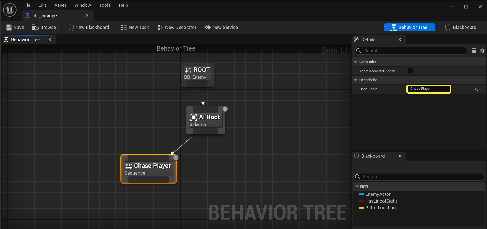
We use a Sequence node here as we plan to tell the AI to do a sequence of actions: rotate towards the player, change their movement speed, then move to and chase the Player.
6. Left-click and drag off the AI Root node and add a Sequence node called Patrol.
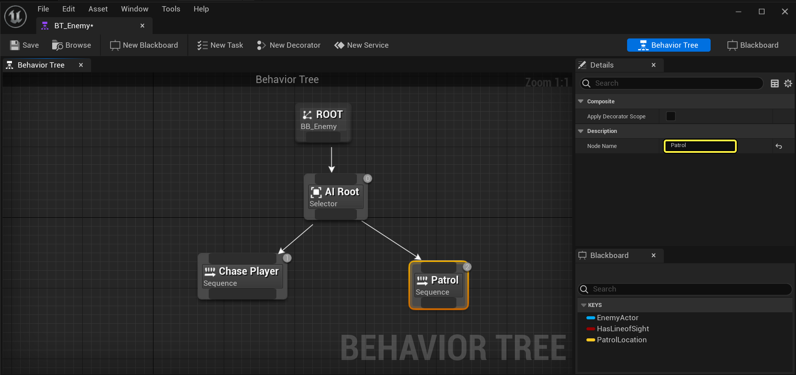
For our AI, we will use the Sequence node to find a random location on the map, move to that location, then wait there for a while before repeating the process of finding a new location to move to. You may also notice the numbers in the upper-right corner of the nodes:

This indicates the order of operation. Behavior Trees execute from left-to-right and top-down, so the arrangement of your nodes is important. The most important actions for the AI should usually be placed to the left, while the less important actions (or fallback behaviors) are placed to the right. Child branches execute in the same fashion and should any child branch fail, the entire branch will stop executing and will fail back up the tree. For example, if Chase Player failed, it would return up to AI Root before moving on to Patrol.
7. Drag off AI Root then add a Wait Task to the right of Patrol with Wait Time set to 1.0.
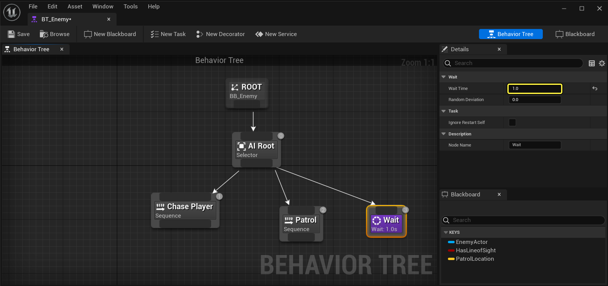
You will notice that this node is purple, indicating that it is a Task node. Task nodes are the actions that you want the Behavior Tree to perform. The Wait Task acts as a catch-all if the Behavior Tree fails both Chase Player and Patrol.
8. Drag off the Chase Player and add a Rotate to Face

This particular Task enables you to designate a Blackboard Entry that you want to rotate and face, in our case the Enemy Actor (Player). Once you add the node, if you look in the Details panel, the Blackboard Key will automatically be set to EnemyActor because it filters for the Actor blackboard variable and it is the first one in the list. You can adjust the Precision option if you want to tune the success condition range as well as change the Node Name.
9. From the Toolbar, click the New Task button.

In addition to using the built-in Tasks, you can create and assign your custom Tasks that have additional logic that you can customize and define. This Task will be used to change the movement speed of the AI so that it runs after the Player. When you create a new Task, a new Blueprint will automatically be created and opened.

10. In the Content Drawer, rename the new asset as BTT _ChasePlayer.
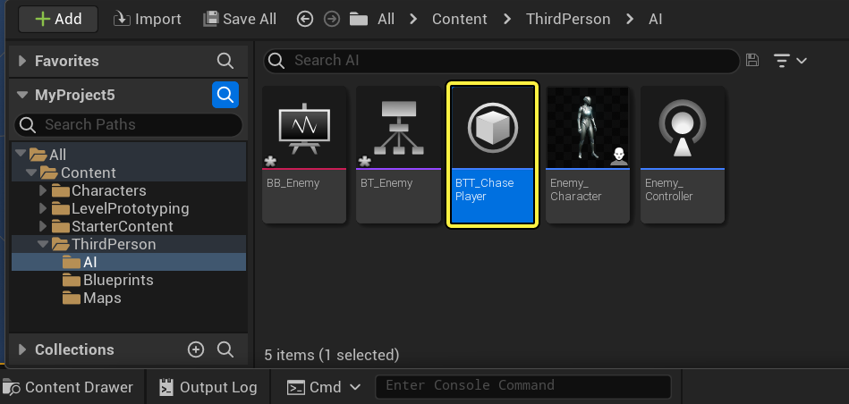
It's a good practice to immediately rename any newly created Tasks, Decorators or Services when you create them. Proper naming conventions would be to prefix the name of the asset with the type of asset you create such as BTT for Behavior Tree Tasks, BTD for Behavior Tree Decorators, or BTS for Behavior Tree Services.
11. Inside the BT_Enemy, add the BTT_ChasePlayer Task followed by a Move To.
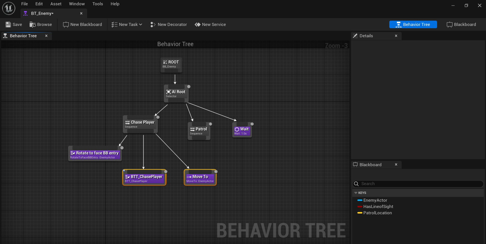
Our new Task has no logic in it yet, but we will come back and add the logic for changing the movement speed of our AI character after which, the AI will Move To the EnemyActor (Player).
12. Create a new Task and rename it BTT_FindRandomPatrol, then connect it to Patrol.
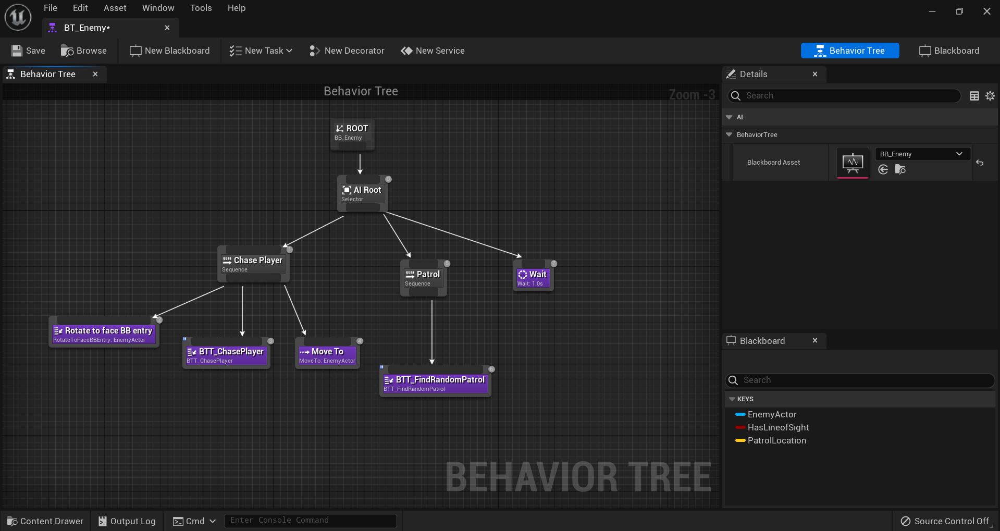
13. Add a Move To Task and set the Blackboard Key to PatrolLocation.

This will instruct the AI to Move To the PatrolLocation which will be set inside the BTT_FindRandomPatrol Task.
14. Add a Wait Task following Move To with Wait Time to 4.0 and Random Deviation to 1.0.
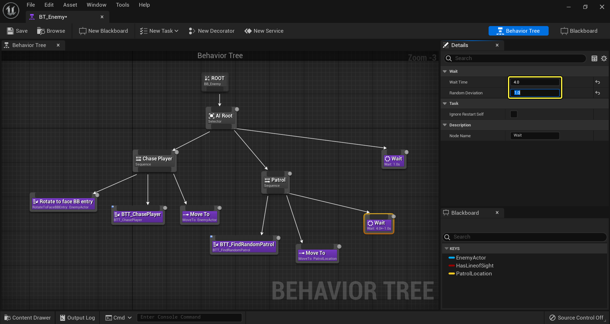
This instructs the AI to wait at PatrolLocation for 3-5 seconds (Random Deviation adds + or - a second to Wait Time). The framework for our Behavior Tree is complete. In the next step, we will add the logic for changing the movement speed of the AI, finding a random location to navigate to when the AI is patrolling, and the logic for determining when the AI should be chasing the player or patrolling.
4- Task Setup - Chase Player
In this step, we set up our Chase Player Task to change the movement speed when chasing the Player.
1. Inside BTT_ChasePlayer, right-click and add an Event Receive Execute AI node.

The Event Receive Execute AI node is fired when this Task is activated inside the Behavior Tree.
2. Off the Controlled Pawn pin, use a Cast to Enemy_Character node.
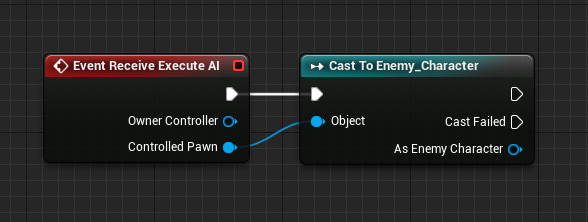
Here, we are accessing the Character Blueprint for our AI called Enemy_Character by using a Cast node.
3. Inside the Content Drawer, open the Enemy_Character Blueprint and add a Function called Update Walk Speed.

This function will be called from our Behavior Tree and will be used to change the AI's movement speed.
4. In the Details panel for the Update Walk Speed function, add a Float input called NewWalkSpeed.

5. Drag the CharacterMovement Component off the Components tab.

Click and drag off the pin of Character Movement and from the actions menu type in Set Max Walk Speed, then click Set Max Walk Speed from the menu.

7. Use Set Max Walk Speed and connect as shown below.
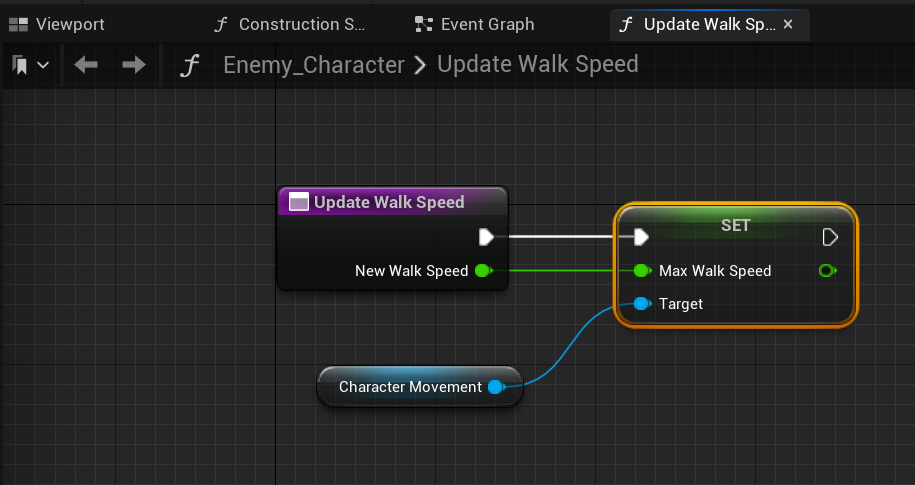
When we call this function from the Behavior Tree, we can pass through a value to be used as the new speed.
1. Back inside the BTT_ChasePlayer Task, from the As Enemy Character node, call Update Walk Speed set to 500.0 and connect as shown.

2. Following Update Walk Speed, add two Finish Execute nodes and connect as shown below.
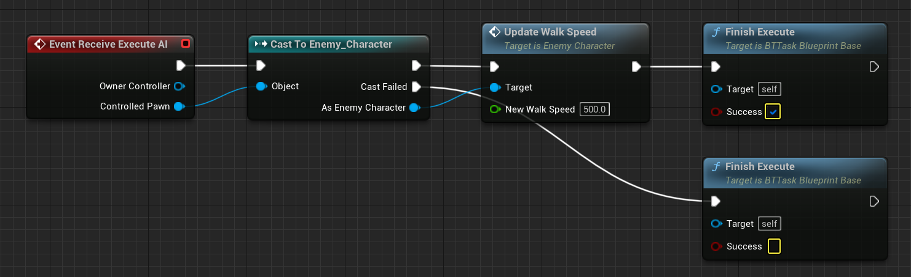
Here we mark the Task as successfully finishing when we successfully cast to the Enemy_Character. If the controlled Pawn is not Enemy_Character, we need to handle this case so we mark the Task as unsuccessful which will abort the Task.
3. Right-click the New Walk Speed pin, then promote it to a variable and call it ChaseSpeed.
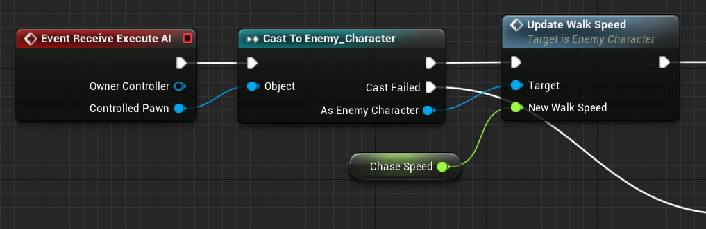
4. For ChaseSpeed, make sure to enable Instance Editable.
p>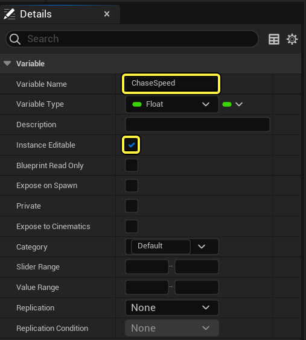
By promoting this to an Instance Editable variable, the value of Max Walk Speed can be set from outside of this Blueprint and will be available as a property inside our Behavior Tree.
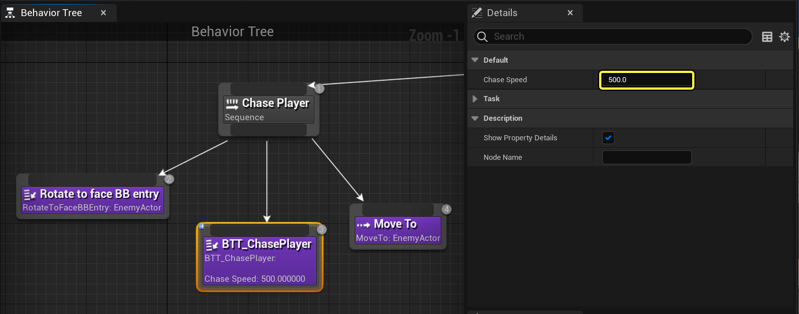
We can now easily change the value of Chase Speed that is being sent to the Enemy_Character Blueprint enabling us to tune and tweak how fast our AI chases the Player. Our Chase Player Task is complete, in the next step, we will set up the Find Random Patrol Task logic to get a random location for the AI to move to.
5-Task Setup - Find Random Patrol
In this step, we set up our Find Random Patrol Task so our AI moves to a random location when it is not chasing the Player.
1. Inside BTT_FindRandomPatrol, use Event Receive Execute AI and Cast to Enemy_Character and connect them.
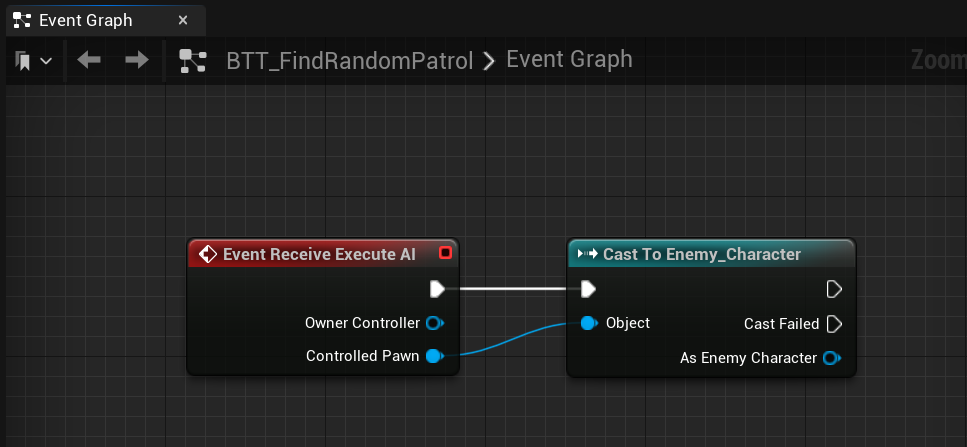
2. Off As Enemy Character, call Update Walk Speed and promote New Walk Speed to a variable called Patrol Speed with the following settings:

- Variable Name to PatrolSpeed
- Instance Editable to Enabled
- Patrol Speed (Default Value) to 125.0
Here we are lowering the enemy movement speed while patrolling.
3. Off Controlled Pawn, Get Actor Location then GetRandomReachablePointInRadius with the Return Value connected to a Branch.
4. Promote the Radius on GetRandomReachablePointInRadius to a variable with the following settings:
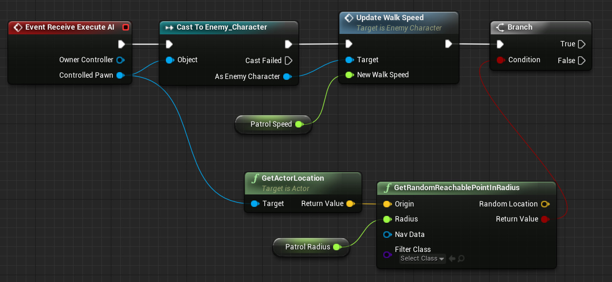
- Variable Name to PatrolRadius
- Instance Editable to Enabled
- Patrol Radius (Default Value) to 1000.0
Here we are finding a random location within 1000 units of the enemy character's current location. We are also using a Branch node to handle the edge case that a random point to move to is not found.
5. Off the Random Location pin, use Set Blackboard Value as Vector with the Key promoted to a variable called PatrolLocation.
6. Use another Set Blackboard Value as Vector node with the Value coming from Get Actor Location.
7. Continuing from the previous step, connect as shown below with both nodes resulting in Finish Execute marked Success.

If the enemy finds a random position to move to, it will be stored in the Blackboard as the location to move to. If a location is not found, it will use its current location and stay put before trying a new location. We still need to handle the edge case that the Controlled Pawn is not Enemy_Character.
8. Off the Cast Failed pin of the Cast node, use Finish Execute with Success disabled.

If the Controlled Pawn is not Enemy_Character, this Task will be marked as unsuccessful and will be aborted. Our Find Random Patrol Task is complete. In the next step, we will learn more about Decorators and how they can be used as conditionals as well as set up our AI Controller.
6- AI Controller Setup
In this step, we do a little bit of work inside the AI Controller in preparation for the final step, setting up a Decorator to determine which branch of our Behavior Tree to enter.
1. In the Content Drawer, open the Enemy_Controller Blueprint and add an Event On Possess node.
2. Off Event On Possess, add a Run Behavior Tree node with BTAsset set to BT_Enemy.